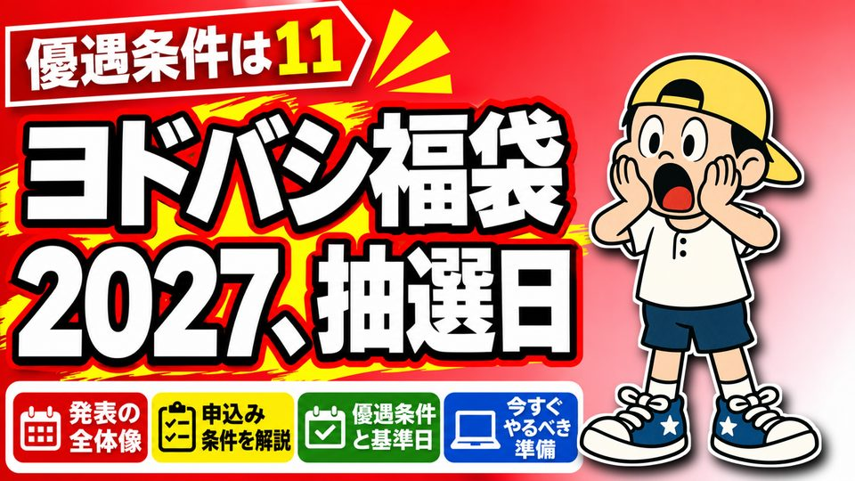
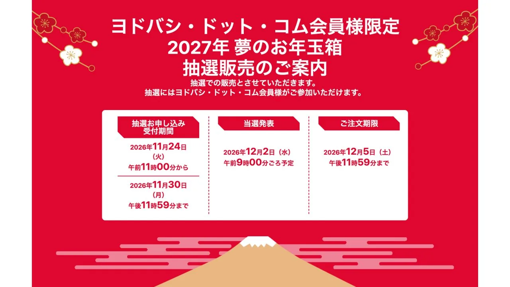
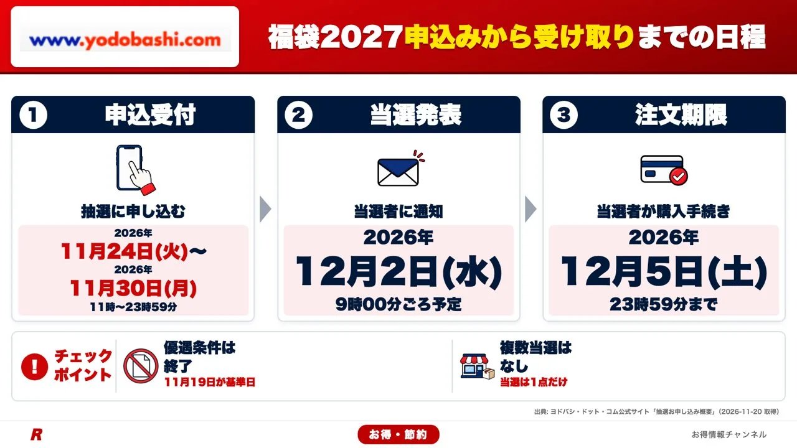
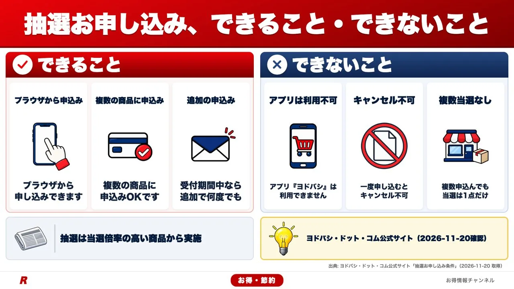
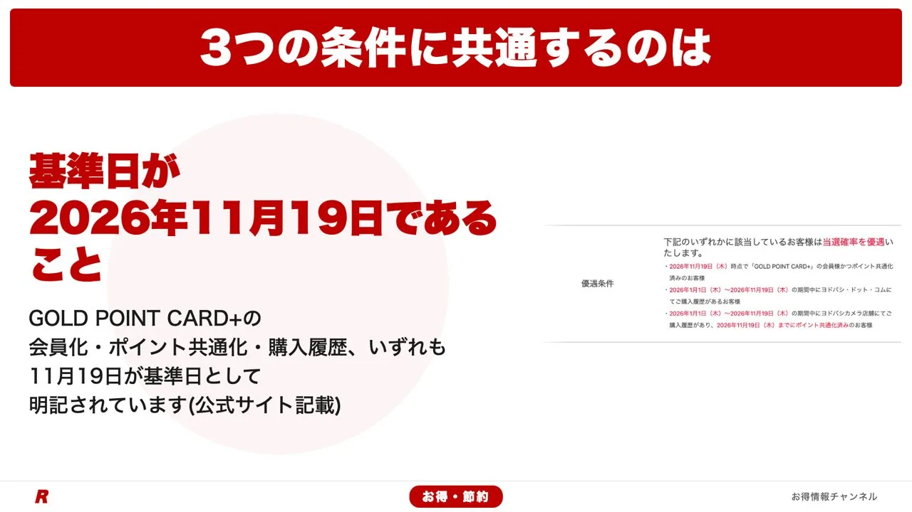
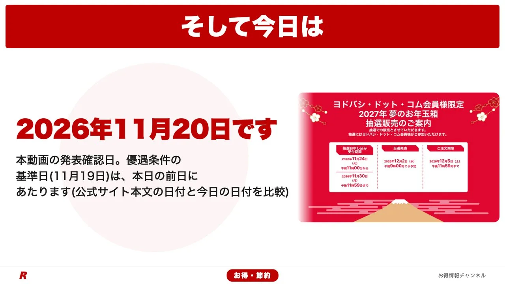
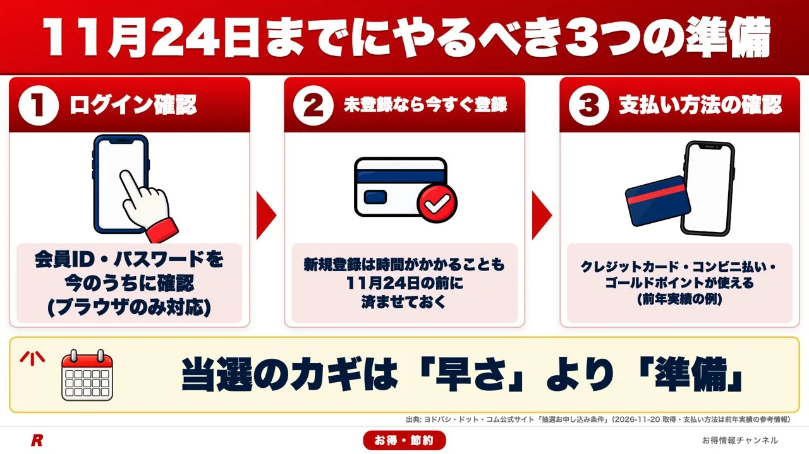
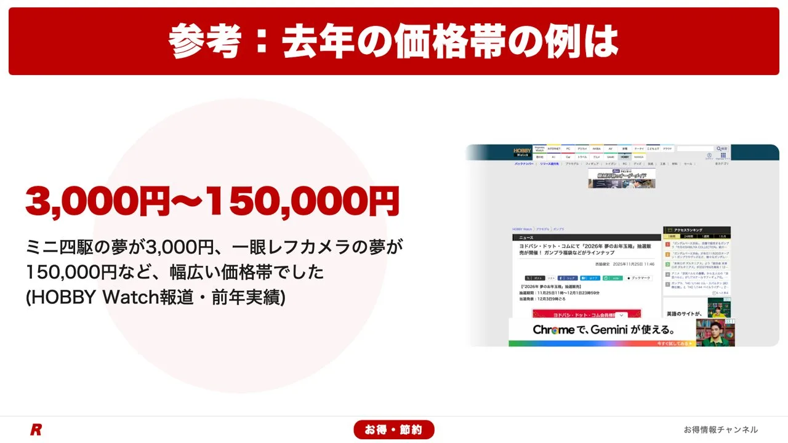

ヨドバシの福袋「2027年 夢のお年玉箱」の抽選日程が、2026年11月20日に発表されました。申込み受付は11月24日11時から11月30日23時59分まで、当選発表は12月2日9時ごろ、注文期限は12月5日23時59分までです。ただし、当選確率を優遇する条件の基準日は11月19日で、発表の前日の時点ですでに終わっています。この記事では、公式発表の内容と、今すぐ準備しておきたいことをまとめます。

▶ この記事の内容を動画で見る（お金の総合チャンネル）01申込みの日程（スケジュール）
2026年11月20日、ヨドバシ・ドット・コムの特設ページで「2027年 夢のお年玉箱」の抽選販売に関する日程が発表されました。価格や箱の種類、中身についてはまだ発表されておらず、公式サイトには「抽選販売に関する詳細は、抽選お申し込みページにてお知らせいたします」と明記されています。詳細は、申込み受付が始まる11月24日に発表される予定です。

発表されたのは、次の3つの日程です。
| 項目 | 日時 |
|---|---|
| 抽選お申し込み受付 | 2026年11月24日11時〜11月30日23時59分 |
| 当選発表 | 2026年12月2日9時ごろ予定 |
| ご注文期限 | 2026年12月5日23時59分まで |

去年2026年版の受付開始は11月25日だったので、今年は1日早いスタートです。当選発表から注文期限までは3日間の猶予があります。
02申込み条件、できること・できないこと
抽選に申し込めるのは、ヨドバシ・ドット・コムの会員です。会員登録が済んでいない場合は、公式サイトの登録ページから先に手続きが必要です。

申込みはブラウザからのみ可能で、iPhoneのショッピングアプリ「ヨドバシ」は利用できません。複数の商品に申し込むことができ、受付期間中であれば追加の申込みも何度でも可能です。ただし、複数の商品に申し込んでも、当選するのはいずれか1点だけです。抽選は、当選倍率の高い商品から順番に行われます。
注意一度申し込んだ抽選はキャンセルできません。申し込む前に、予算や本命の商品を決めておくと安心です。
03優遇条件と、もう終わっている基準日
公式サイトには、当選確率を優遇する条件が3つ書かれています。どれか1つに該当すれば優遇され、3つすべてを満たす必要はありません。
- 2026年11月19日時点で「GOLD POINT CARD+」の会員で、かつポイント共通化が済んでいる方
- 2026年1月1日から11月19日の間に、ヨドバシ・ドット・コムで購入履歴がある方
- 同じ期間に店舗で購入履歴があり、11月19日までにポイント共通化を済ませた方

この3つの条件は、いずれも基準日が2026年11月19日です。そして、今回の発表があった2026年11月20日は、その翌日にあたります。つまり、優遇条件の基準日はすでに終わっています。

結論優遇条件を満たしていなくても、抽選に参加すること自体はできます。優遇が無くても参加資格には影響せず、変わるのは当選確率だけです。
ヨドバシカメラの店舗だけを利用してきた人は、ネットと店舗のポイントを1つにまとめる「ポイント共通化」の手続きをしていないと、優遇条件の対象になりません。該当する人は、公式サイトから手続きの状況を確認しておきましょう。
04今すぐ準備しておきたいこと
優遇条件の基準日は終わっていますが、申込み受付の11月24日11時までに準備できることはあります。

- ログイン確認｜会員ID・パスワードを今のうちに確認しておきます（申込みはブラウザのみ対応）。
- 未登録なら今すぐ登録｜新規登録に時間がかかることもあるため、11月24日より前に済ませておきます。
- 支払い方法の確認｜前年の実績ではクレジットカード・コンビニ払い・ゴールドポイントが使えました。
11月24日は火曜日で、受付開始は午前11時からです。平日の午前中にあたるため、仕事や学校の予定も確認しておくと安心です。複数の商品に申し込む場合は、当選は1点だけなので、欲しい順に優先順位を決めておくとスムーズです。
05参考：2026年版の価格帯と倍率
2027年版の価格や中身はまだ発表されていませんが、去年2026年版の実例を参考として紹介します。去年の受付期間は2025年11月25日11時から12月1日23時59分まで、当選発表は12月3日9時ごろでした。

報道によると、2026年版の価格帯はミニ四駆の夢が3,000円から、一眼レフカメラの夢が150,000円までと幅広く、ガンプラ（マスターグレード）の夢は25,000円、小型ミラーレス一眼の夢は90,000円でした。支払い方法はクレジットカード・コンビニ払い・ゴールドポイントの3つで、ゴールドポイントでの購入は購入額の10%が還元されたと報じられています。また、好評だった商品は12月8日から追加の抽選販売も行われました。2027年版で同じ価格・還元率になるとは限らないため、詳細は11月24日の発表で確認してください。
06よくある質問
ヨドバシ福袋2027の価格や中身はいつ分かりますか？
現時点では未発表です。申込み受付が始まる11月24日に、抽選お申し込みページで発表される予定です。
優遇条件を満たしていないと抽選に参加できませんか？
参加できます。優遇条件を満たしていなくても抽選の参加資格には影響せず、変わるのは当選確率だけです。
複数の商品に申し込むとどうなりますか？
申込み自体は何度でも可能ですが、当選するのはいずれか1点だけです。抽選は当選倍率の高い商品から順番に行われます。
スマホのアプリから申し込めますか？
iPhoneのショッピングアプリ「ヨドバシ」からは申し込めません。ブラウザから公式サイトにアクセスして申し込みます。
07まとめ
結論ヨドバシ福袋2027の申込み受付は11月24日11時から11月30日23時59分までです。優遇条件の基準日11月19日はすでに終わっていますが、優遇が無くても抽選には参加できます。
- 当選発表は12月2日9時ごろ、注文期限は12月5日23時59分までです。
- 申込みはブラウザのみ、複数申込みは可能ですが当選は1点だけ、キャンセルはできません。
- 優遇条件は3つのうちどれか1つで対象になりますが、基準日はすべて11月19日で終わっています。
- 価格・中身の詳細は、申込み受付が始まる11月24日に発表される予定です。
会員登録がまだの人は、受付開始の前に済ませておくと安心です。年末年始にあわせて福袋をまとめて狙っているなら、新NISAの年内枠を使い切る手順や、クレジットカードの締め日・支払い日、3社で比較もあわせて確認しておくと、支払いの計画が立てやすくなります。